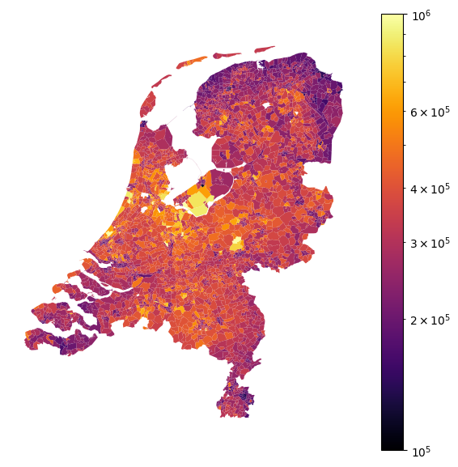
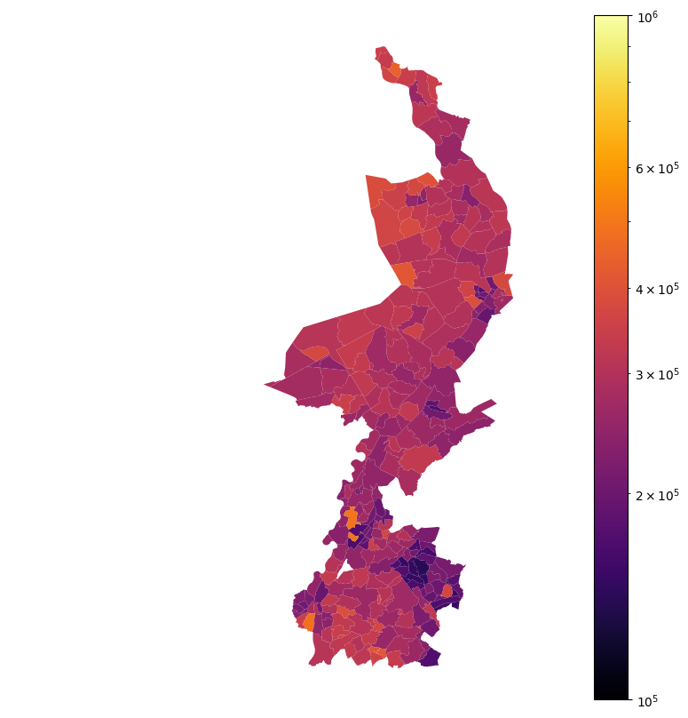
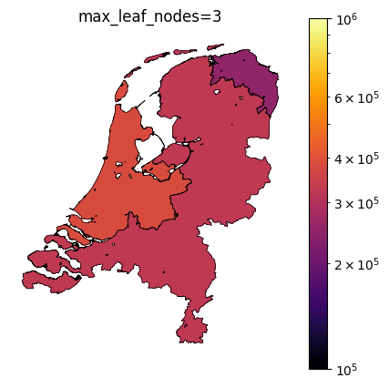
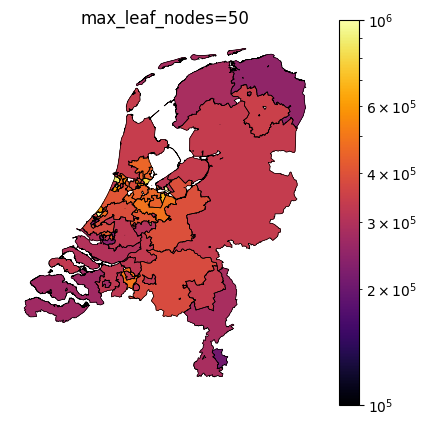

Taxonomy feature encoding
Introduction
Features like zipcodes or industry codes (NAICS, MCC) contain information that is part of a taxomy. Although these feature values are numerical, it doesn’t necessarily make sense to use them as ordinal features; a region’s zipcode might be a higher value than another region’s zipcode, that doesn’t mean that there is valuable ranking in these values. If we encode taxonomy bearing features using One-Hot-Encoding, the number of features blows up tremendously. Moreover, we loose helpful information on the similarity of adjacent values. E.g. the MCC industry codes for ‘Commerical clothing’ (5137) and ‘Commerical footwear’ (5139) are clearly more similar than for example ‘Child Care services’ (8351). We could overcome this issue by One-Hot-Encoding at a higher level (e.g. 5xxx for ‘Stores’ and 8xxx for ‘Professional Services and Membership Organizations’) but dependent on the modelling task, we might want to have higher granularity in specific parts of the possible feature value range.
To overcome these issues, I created the Taxonomy Encoder for scikit-learn. Before going to the implementation, let’s first have a look at a practical application; house price prediction in the Netherlands.
House price prediction
When predicting house prices, zipcode is an example of a taxonomy bearing feature where we need different granularity for encoding the feature in different regions. Figure 1 shows average house prices in the Netherlands in 2023 per zipcode (source: CBS). We know that in cities house prices in different zones differ a lot, even if the zones are only a few kilometers away. In more rural areas, these differences are often much less prevalent. To illustrate this, Figure 2 zooms in on Amsterdam (a) and the province of Limburg (b). Amsterdam is a relatively small city that has zones with house prices in the lower end and the most expensive houses in the country. The province of Limburg is a much larger area but has significantly less variation in house prices. Going back to our aim of encoding the zipcode feature; we need different granularity for cities than for the country side. The question is how to choose this granularity.


Let’s use a decision tree regressor to create segments of zipcodes that are homogenous with respect to mean house prices. As I’m lacking a dataset with house prices of individual houses, I’m going to create such dataset by concatenating the CBS dataset 10 times and multiply house prices with a random factor between 0.9 and 1.1 to introduce some variation. The decision tree regressor is fitted with max_leaf_nodes set to 50. This means that the zipcodes will be placed in 50 segments. To illustrate the effectiveness of this method, I show in-sample predictions for the most expensive (Table 1) and the least expensive areas (Table 2). The two tables show encoded mean house prices, the range of zipcodes, the number of zipcodes in that range (apparently not all possible values are used as zipcodes!) and the cities where these zipcodes are in. Clearly, the most expensive areas are much smaller and require a higher granularity of zipcode encoding than areas with lower house prices. Note how Amsterdam has even three distinct zipcode areas in the country top 10. If we use these in-sample generated zipcode encodings in our model, we would make the mistake of information leakage. The house price of each house would be used to generate a feature that is used to predict that same house price. This is where the Taxonomy Encoder comes into play.
| zipcode | city | |||
|---|---|---|---|---|
| min | max | nunique | unique | |
| encoded_mean | ||||
| 1,340,222 | 2243 | 2244 | 2 | [Wassenaar] |
| 1,276,450 | 2111 | 2111 | 1 | [Aerdenhout] |
| 1,221,419 | 1077 | 1077 | 1 | [Amsterdam] |
| 1,138,075 | 1358 | 1358 | 1 | [Almere] |
| 1,015,257 | 1071 | 1071 | 1 | [Amsterdam] |
| 995,357 | 3546 | 3546 | 1 | [Utrecht] |
| 881,411 | 2051 | 2061 | 2 | [Overveen, Bloemendaal] |
| 802,266 | 1026 | 1028 | 3 | [Amsterdam] |
| 747,447 | 2106 | 2106 | 1 | [Heemstede] |
| 691,614 | 1251 | 1272 | 6 | [Laren, Blaricum, Huizen] |
| zipcode | city | |||
|---|---|---|---|---|
| min | max | nunique | unique | |
| encoded_mean | ||||
| 205,692 | 6369 | 6511 | 43 | [Heerlen, Simpelveld, Landgraaf, nan, Hoensbroek, Amstenrade, Oirsbeek, Doenrade, Brunssum, Merkelbeek, Schinveld, Jabeek, Bingelrade, Kerkrade, Eygelshoven, Nijmegen] |
| 234,407 | 3066 | 3119 | 30 | [Rotterdam, Schiedam] |
| 244,079 | 2511 | 2547 | 24 | [Den Haag] |
| 247,141 | 9541 | 9999 | 254 | [Groningen, Lauwersoog, Hornhuizen, Vlagtwedde, Bourtange, Sellingen, Ter Apel, Ter Apelkanaal, Zandberg, Veelerveen, 2e Exloërmond, 1e Exloërmond, Exloërveen, Musselkanaal, Mussel, Vledderveen, O... |
| 269,679 | 4331 | 4707 | 164 | [Terneuzen, Nieuw Namen, Kloosterzande, Steenbergen, Oud-Vossemeer, Middelburg, Nieuw- en Sint Joosland, Arnemuiden, Veere, Gapinge, Serooskerke, Vrouwenpolder, Oostkapelle, Domburg, Westkapelle, ... |
| 281,335 | 8574 | 9301 | 336 | [Workum, Oosterend, Grou, Drachten, Bakhuizen, Elahuizen, Oudega, Kolderwolde, Hemelum, Sneek, Gaastmeer, Idzega, Sandfirden, Blauwhuis, Westhem, Abbega, Oosthem, Heeg, Hommerts, Jutrijp, Uitwelli... |
| 283,546 | 5851 | 6367 | 218 | [Susteren, Geleen, Eys, Afferden L, Siebengewald, Bergen L, Well L, Wellerlooi, Wanssum, Geijsteren, Blitterswijck, Meerlo, Tienray, Swolgen, Broekhuizenvorst, Broekhuizen, Venlo, Tegelen, Steyl, ... |
| 301,971 | 3121 | 3443 | 152 | [Hellevoetsluis, Numansdorp, Dordrecht, Schiedam, Vlaardingen, Maassluis, Hoek van Holland, Maasland, Rhoon, Poortugaal, Rozenburg, Hoogvliet Rotterdam, Pernis Rotterdam, Spijkenisse, Hekelingen, ... |
| 307,961 | 3551 | 3565 | 10 | [Utrecht] |
| 317,922 | 1273 | 1357 | 39 | [Almere, Huizen] |
Taxonomy Encoder
The Taxonomy Encoder is a type of target encoder, as for example implemented in scikit-learn. A plain vanilla target encoder encodes a feature value by the target mean value for all samples within that category. When training a model, it’s important that out-of-sample target encodings are used to prevent information leakage. This is achieved by internal using cross-fitting and prediction. We’re going to apply the same logic in the Taxonomy Encoder. The difference with a normal target encoder is that we don’t take encode the feature by taking the mean of the target for all samples within the same category, but we take the decision tree prediction instead. By setting the maximum numer of leafs max_leaf_nodes we choose how many segments the decision tree will create. More nodes mean higher granularity but could also result in overfitting. When there are only a small amount of samples in a particular segment, we might want that segment to be merged with another segment; we set this by min_samples_leaf - again to avoid overfitting. The implementation of the Taxonomy Encoder is rather straightforward:
from sklearn.base import TransformerMixin, BaseEstimator
from sklearn.model_selection import cross_val_predict
from sklearn.tree import DecisionTreeRegressor
class TaxonomyEncoder(TransformerMixin, BaseEstimator):
def __init__(self, max_leaf_nodes=10, min_samples_leaf=1, cv=3):
self.max_leaf_nodes = max_leaf_nodes
self.min_samples_leaf = min_samples_leaf
self.cv = cv
def fit(self, X, y=None):
self.feature_names_ = X.columns.to_list()
self.tree_ = DecisionTreeRegressor(max_leaf_nodes=self.max_leaf_nodes,
min_samples_leaf=self.min_samples_leaf)
self.tree_.fit(X,y)
return self
def transform(self, X):
return self.tree_.predict(X).reshape(-1,1)
def fit_transform(self, X, y=None):
self.fit(X, y) # needed to work in ColumnTransformer
return cross_val_predict(self.tree_, X, y, cv=self.cv).reshape(-1,1)
def get_feature_names_in(self):
return self.feature_names_
def get_feature_names_out(self, input_features):
return [f"txe_{x}" for x in input_features]Note that we explicitly implement fit_transform and overwrite this method defined in the TransformerMixin. This is the place where we create out-of-sample predictions using scikit-learn’s cross_val_predict function. Let’s confirm it works as intended. We first fit the encoder to our dataframe and then transform. This results in in-sample predictions and this is not how it should be used when training a model, only for prediction of unseen samples.
te = TaxonomyEncoder(10).fit(mapdf[['zipcode']], mapdf[target])
te.transform(mapdf[['zipcode']])array([[471522.07790419],
[471522.07790419],
[317921.96886381],
...,
[247140.88744592],
[247140.88744592],
[247140.88744592]])When fitting a model, the fit_transform method is called. Note how this results in slightly different values:
te.fit_transform(mapdf[['zipcode']], mapdf[target])array([[470643.24618252],
[470643.24618252],
[362411.13606549],
...,
[247447.2351803 ],
[247447.2351803 ],
[247447.2351803 ]])Obviously, the Taxonomy Encoder only adds value when used in a model pipeline. Here we create a ColumnTransformer in which we let the TaxonomyEncoder operate on the zipcode feature and leave the other features untouched:
from sklearn.compose import ColumnTransformer
transformer = ColumnTransformer([
('taxonomy', TaxonomyEncoder(max_leaf_nodes=100), ['zipcode']),
('numeric', 'passthrough', other_features)
])This transformer can now be used in a scikit-learn pipeline to preprocess features for a regression model, in this example a random forest regressor:
from sklearn.pipeline import make_pipeline
pipe = make_pipeline(transformer, RandomForestRegressor())
pipe.fit(mapdf[['zipcode']+other_features], mapdf[target])Pipeline(steps=[('columntransformer',
ColumnTransformer(transformers=[('taxonomy',
TaxonomyEncoder(max_leaf_nodes=100),
['zipcode']),
('numeric', 'passthrough',
['percentage_owner_occupied_homes',
'percentage_people_with_fin_support',
'nr_houses'])])),
('randomforestregressor', RandomForestRegressor())])In a Jupyter environment, please rerun this cell to show the HTML representation or trust the notebook. On GitHub, the HTML representation is unable to render, please try loading this page with nbviewer.org.
Pipeline(steps=[('columntransformer',
ColumnTransformer(transformers=[('taxonomy',
TaxonomyEncoder(max_leaf_nodes=100),
['zipcode']),
('numeric', 'passthrough',
['percentage_owner_occupied_homes',
'percentage_people_with_fin_support',
'nr_houses'])])),
('randomforestregressor', RandomForestRegressor())])ColumnTransformer(transformers=[('taxonomy',
TaxonomyEncoder(max_leaf_nodes=100),
['zipcode']),
('numeric', 'passthrough',
['percentage_owner_occupied_homes',
'percentage_people_with_fin_support',
'nr_houses'])])['zipcode']
TaxonomyEncoder(max_leaf_nodes=100)
['percentage_owner_occupied_homes', 'percentage_people_with_fin_support', 'nr_houses']
passthrough
RandomForestRegressor()
Thanks to the method get_feature_names_out in the TaxonomyEncoder, we can easily get feature importances per feature.
dict(zip(pipe.steps[0][1].get_feature_names_out(),
pipe.steps[-1][1].feature_importances_)){'taxonomy__txe_zipcode': 0.5783498842971975,
'numeric__percentage_owner_occupied_homes': 0.111009480628988,
'numeric__percentage_people_with_fin_support': 0.15164163701528433,
'numeric__nr_houses': 0.15899899805853024}Hyperparameter tuning
The TaxonomyEncoder introduces an additional hyperparameter to tune: the number of segments in which the zipcodes are combined. Below are plots of different values for max_leaf_nodes for encoding zipcodes in our house price prediction example. Notice how only a large number of leafs results in segmentation of the east side of the country.



Taxonomy Encoder for binary classification
If you want to use the Taxonomy Encoder in a binary classification modelling exercise, only a few changes need to be made. The DecisionTreeRegressor should be replaced with a DecisionTreeClassifier. The cross_val_predict function should be called with method='predict_proba' and only the positive class probabilities should be retrieved:
from sklearn.base import TransformerMixin, BaseEstimator
from sklearn.model_selection import cross_val_predict
from sklearn.tree import DecisionTreeClassifier
class TaxonomyEncoder(TransformerMixin, BaseEstimator):
def __init__(self, max_leaf_nodes=10, min_samples_leaf=1, cv=3):
self.max_leaf_nodes = max_leaf_nodes
self.min_samples_leaf = min_samples_leaf
self.cv = cv
def fit(self, X, y=None):
self.feature_names_ = X.columns.to_list()
self.tree_ = DecisionTreeClassifier(max_leaf_nodes=self.max_leaf_nodes,
min_samples_leaf=self.min_samples_leaf)
self.tree_.fit(X,y)
return self
def transform(self, X):
return self.tree_.predict(X).reshape(-1,1)
def fit_transform(self, X, y=None):
self.fit(X, y) # needed to work in ColumnTransformer
return cross_val_predict(self.tree_, X, y, cv=self.cv,
method='predict_proba')[:,1].reshape(-1,1)
def get_feature_names_in(self):
return self.feature_names_
def get_feature_names_out(self, input_features):
return [f"txe_{x}" for x in input_features]Final remark
It’s important to shuffle your data before using the TaxonomyEncoder. The reason is that the cross_val_predict uses (Stratified)KFold for cv splitting and the function doesn’t allow for usage of any cv-splitter that involves shuffling. If your data is sorted by the taxonomy bearing feature, the cross_val_predict values will be useless. When we set max_leaf_nodes to 3 in our example, the houseprices of zipcodes 7000-9999 would be encoded based on the zipcodes 1000-7000 etc. The alternative solution is to extend the TaxonomyEncoder with a custom cv splitter that implements shuffling.